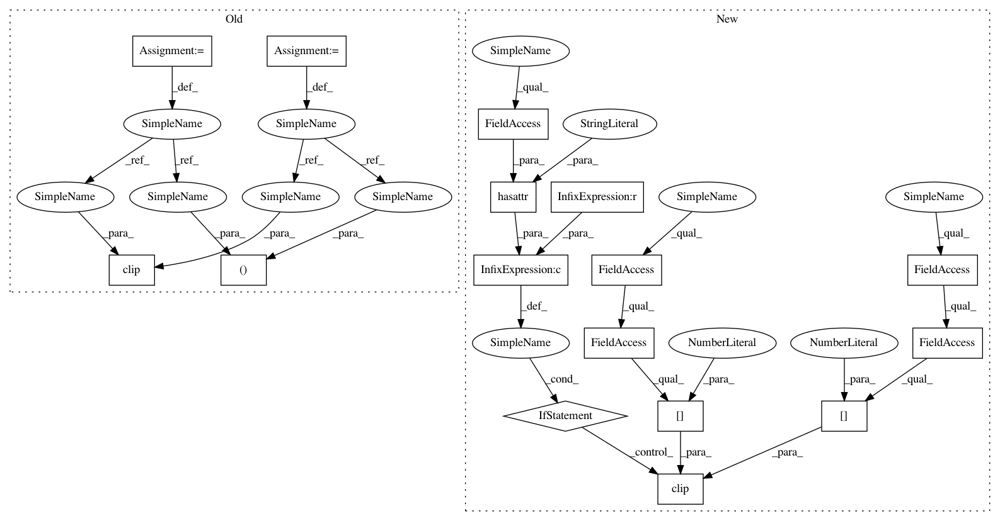

69b5f880966e0f1290e47eb29b2f43674a5b49b0,art/attacks/deepfool.py,DeepFool,generate,#DeepFool#Any#,56
Before Change
:rtype: `np.ndarray`
self.set_params(**kwargs)
clip_min, clip_max = self.classifier.clip_values
x_adv = x.copy()
preds = self.classifier.predict(x, logits=True)
// Determine the class labels for which to compute the gradients
use_grads_subset = self.nb_grads < self.classifier.nb_classes
if use_grads_subset:
// TODO compute set of unique labels per batch
grad_labels = np.argsort(-preds, axis=1)[:, :self.nb_grads]
labels_set = np.unique(grad_labels)
else:
labels_set = np.arange(self.classifier.nb_classes)
sorter = np.arange(len(labels_set))
// Pick a small scalar to avoid division by 0
tol = 10e-8
// Compute perturbation with implicit batching
for batch_id in range(int(np.ceil(x_adv.shape[0] / float(self.batch_size)))):
batch_index_1, batch_index_2 = batch_id * self.batch_size, (batch_id + 1) * self.batch_size
batch = x_adv[batch_index_1:batch_index_2]
// Get predictions and gradients for batch
f = preds[batch_index_1:batch_index_2]
fk_hat = np.argmax(f, axis=1)
if use_grads_subset:
// Compute gradients only for top predicted classes
grd = np.array([self.classifier.class_gradient(batch, logits=True, label=_) for _ in labels_set])
grd = np.squeeze(np.swapaxes(grd, 0, 2), axis=0)
else:
// Compute gradients for all classes
grd = self.classifier.class_gradient(batch, logits=True)
// Get current predictions
active_indices = np.arange(len(batch))
current_step = 0
while len(active_indices) != 0 and current_step < self.max_iter:
// Compute difference in predictions and gradients only for selected top predictions
labels_indices = sorter[np.searchsorted(labels_set, fk_hat, sorter=sorter)]
grad_diff = grd - grd[np.arange(len(grd)), labels_indices][:, None]
f_diff = f[:, labels_set] - f[np.arange(len(f)), labels_indices][:, None]
// Choose coordinate and compute perturbation
norm = np.linalg.norm(grad_diff.reshape(len(grad_diff), len(labels_set), -1), axis=2) + tol
value = np.abs(f_diff) / norm
value[np.arange(len(value)), labels_indices] = np.inf
l = np.argmin(value, axis=1)
r = (abs(f_diff[np.arange(len(f_diff)), l]) / (pow(np.linalg.norm(grad_diff[np.arange(len(
grad_diff)), l].reshape(len(grad_diff), -1), axis=1), 2) + tol))[:, None, None, None] * \
grad_diff[np.arange(len(grad_diff)), l]
// Add perturbation and clip result
batch[active_indices] = np.clip(batch[active_indices] + r[active_indices], clip_min, clip_max)
// Recompute prediction for new x
f = self.classifier.predict(batch, logits=True)
fk_i_hat = np.argmax(f, axis=1)
// Recompute gradients for new x
if use_grads_subset:
// Compute gradients only for (originally) top predicted classes
grd = np.array([self.classifier.class_gradient(batch, logits=True, label=_) for _ in labels_set])
grd = np.squeeze(np.swapaxes(grd, 0, 2), axis=0)
else:
// Compute gradients for all classes
grd = self.classifier.class_gradient(batch, logits=True)
// Stop if misclassification has been achieved
active_indices = np.where(fk_i_hat == fk_hat)[0]
current_step += 1
// Apply overshoot parameter
x_adv[batch_index_1:batch_index_2] = np.clip(x_adv[batch_index_1:batch_index_2] + (
1 + self.epsilon) * (batch - x_adv[batch_index_1:batch_index_2]), clip_min, clip_max)
logger.info("Success rate of DeepFool attack: %.2f%%",
(np.sum(np.argmax(preds, axis=1) != np.argmax(self.classifier.predict(x_adv), axis=1)) /
x.shape[0]))
After Change
// Apply overshoot parameter
x_adv[batch_index_1:batch_index_2] = x_adv[batch_index_1:batch_index_2] + \
(1 + self.epsilon) * (batch - x_adv[batch_index_1:batch_index_2])
if hasattr(self.classifier, "clip_values") and self.classifier.clip_values is not None:
np.clip(x_adv[batch_index_1:batch_index_2], self.classifier.clip_values[0],
self.classifier.clip_values[1], out=x_adv[batch_index_1:batch_index_2])
logger.info("Success rate of DeepFool attack: %.2f%%",
(np.sum(np.argmax(preds, axis=1) != np.argmax(self.classifier.predict(x_adv), axis=1)) /
x.shape[0]))
In pattern: SUPERPATTERN
Frequency: 3
Non-data size: 16
Instances
Project Name: IBM/adversarial-robustness-toolbox
Commit Name: 69b5f880966e0f1290e47eb29b2f43674a5b49b0
Time: 2019-04-30
Author: Maria-Irina.Nicolae@ibm.com
File Name: art/attacks/deepfool.py
Class Name: DeepFool
Method Name: generate
Project Name: IBM/adversarial-robustness-toolbox
Commit Name: 69b5f880966e0f1290e47eb29b2f43674a5b49b0
Time: 2019-04-30
Author: Maria-Irina.Nicolae@ibm.com
File Name: art/attacks/deepfool.py
Class Name: DeepFool
Method Name: generate
Project Name: IBM/adversarial-robustness-toolbox
Commit Name: 69b5f880966e0f1290e47eb29b2f43674a5b49b0
Time: 2019-04-30
Author: Maria-Irina.Nicolae@ibm.com
File Name: art/attacks/elastic_net.py
Class Name: ElasticNet
Method Name: generate
Project Name: IBM/adversarial-robustness-toolbox
Commit Name: 69b5f880966e0f1290e47eb29b2f43674a5b49b0
Time: 2019-04-30
Author: Maria-Irina.Nicolae@ibm.com
File Name: art/attacks/boundary.py
Class Name: BoundaryAttack
Method Name: _attack